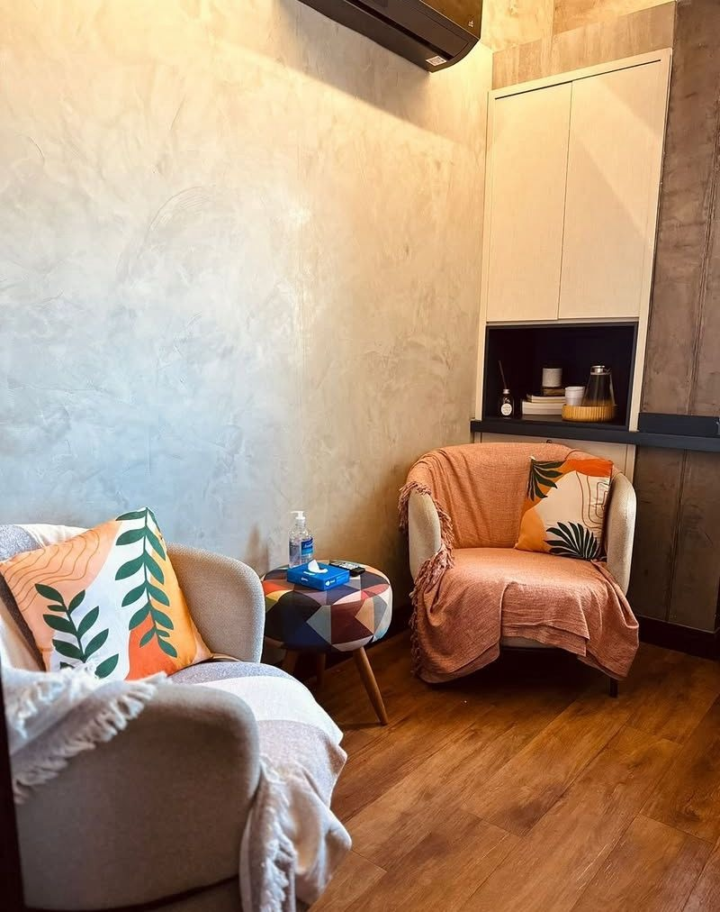
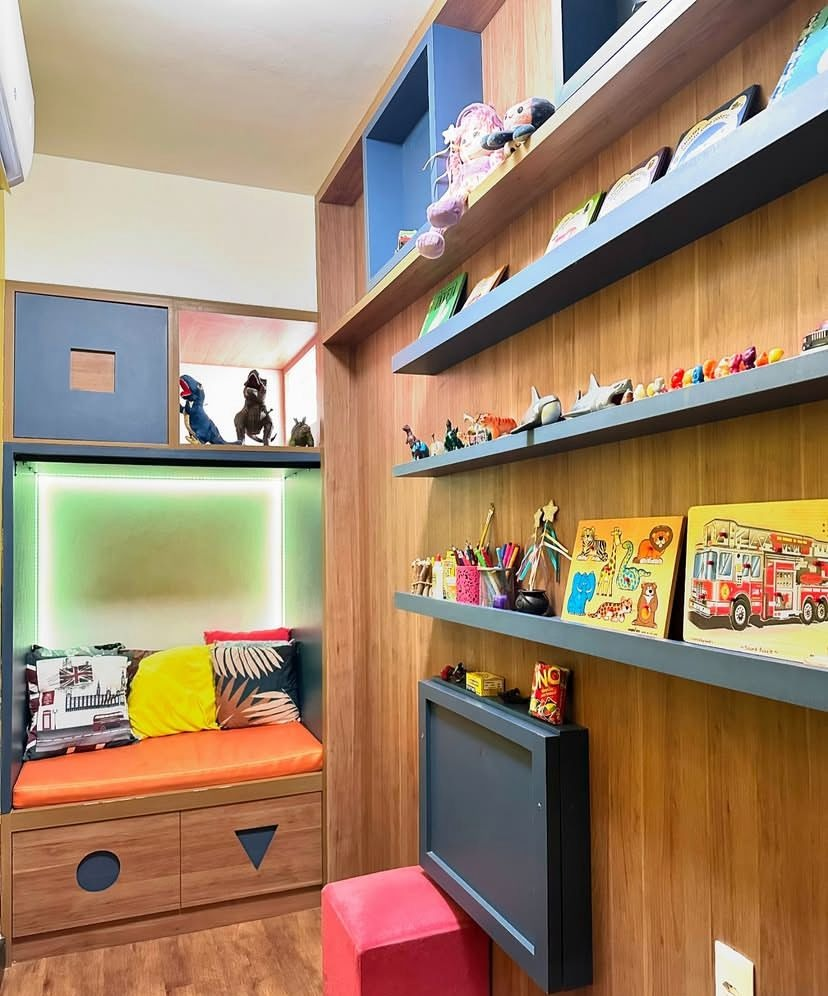

Alessandra Karla Carneiro
Psicóloga com 5 anos de experiência na área clínica. Atuação com enfoque na Terapia Cognitivo Comportamental (TCC), especialmente em demandas de luto, sofrimento emocional e transtornos mentais. Ampla experiência em Hospital-Dia, atuação interdisciplinar em saúde mental e apoio à inclusão escolar.
✨ Focos de Atuação
Terapia Cognitivo-Comportamental
Tratamento fundamentado na TCC, voltado para promover estratégias de enfrentamento e desenvolvimento de habilidades emocionais em crianças e adultos.
Acolhimento ao Luto
Acompanhamento psicológico especializado no processo de luto e na adaptação saudável a perdas significativas e sofrimento emocional.
Inclusão e Transtornos do Desenvolvimento
Apoio psicopedagógico e social a alunos com necessidades especiais, estimulando a comunicação, a socialização e aplicando intervenções lúdicas e ABA (TEA).
💼 Trajetória Profissional
Psicóloga Clínica
Clínica de Psicologia Hollos, Asa NortePsicóloga Clínica Voluntária
Instituto Mãos Amigas, CeilândiaEstagiária Voluntária
Centro de Atenção à Saúde Mental - Anankê, Asa NorteEducadora Social Voluntária
Escola Classe 02, Ceilândia🎓 Formação Acadêmica
Pós-Graduação em Psicopatologia
Grupo PBE Educação - Fernanda Landeiro (Em andamento)Pós-Graduação em Terapia Cognitivo-Comportamental
Instituto Pedagógico Brasileiro (Em andamento)Formação em Psicologia nos Cuidados Paliativos
Catavento InstitutoPós-Graduação em Psicologia Hospitalar
Instituto Pedagógico BrasileiroPós-Graduação em Avaliação Psicológica e Psicodiagnóstico
Instituto Pedagógico BrasileiroBacharelado em Psicologia
Centro Universitário IESB (Fevereiro de 2016 - Dezembro de 2020)📜 Cursos Complementares
Terapia ABA Aplicada ao TEA
FAMEESP (Outubro de 2025)Reconstrução Pós-Desastre e Saúde Pública
FIOCRUZ (Agosto de 2022)Prevenção ao Suicídio
Polícia Militar do Estado de SP / Comando do Corpo de Bombeiros / Escola Superior de Bombeiros (Setembro de 2020)A Prática do Gestalt-terapeuta
Gestalt Paraná (Setembro de 2020)Acompanhamento Terapêutico no Cerrado
Lugar de Encontro / Projeto Conviver (Setembro de 2020)Atenção Psicossocial na COVID-19
FIOCRUZ (Agosto de 2020)🌟 Competências
🗣️ Idiomas & Adicionais
Inglês Avançado
Cursando nível avançado de inglês pelo Centro de Idiomas de Ceilândia.📸 Nosso Espaço
Conheça o nosso consultório, planejado para oferecer conforto, acolhimento e um ambiente lúdico estimulante para o atendimento infantil e adulto.

Espaço de Escuta e Acolhimento
Sala de Recursos e Ludoterapia📞 Entre em Contato
Gostaria de agendar uma avaliação, tirar dúvidas ou conversar sobre demandas escolares e clínicas? Entre em contato!
Consultório
Qi 19 lotes 13 ao 41 bloco B, apto 1901 - Taguatinga, Distrito Federal, 72135-190
alessandrakarlacarneiro@gmail.com